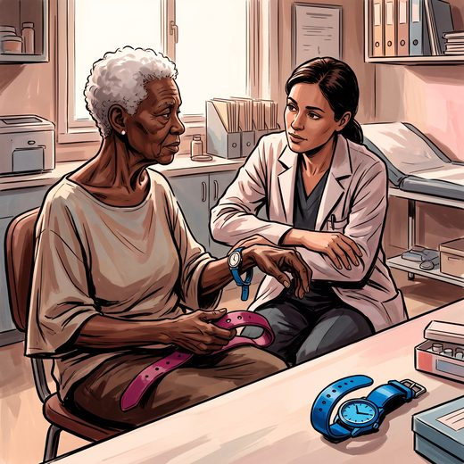

Consulta rápida à beira do leito
Condutas, doses e interações.
Referências da aula · 7
- Guigoz Y, Vellas B, Garry PJ. Mini Nutritional Assessment: a practical assessment tool for grading the nutritional state of elderly patients. Facts Res Gerontol. 1994;(Suppl 2):15-59.
- Rubenstein LZ, Harker JO, Salvà A, Guigoz Y, Vellas B. Screening for undernutrition in geriatric practice: developing the short-form Mini-Nutritional Assessment (MNA-SF). J Gerontol A Biol Sci Med Sci. 2001;56(6):M366-72. PMID 11382797.PubMed
- Cederholm T, Jensen GL, Correia MITD, et al. GLIM criteria for the diagnosis of malnutrition: a consensus report from the global clinical nutrition community. Clin Nutr. 2019;38(1):1-9. PMID 30181091.PubMed
- Volkert D, Beck AM, Cederholm T, et al. ESPEN practical guideline: clinical nutrition and hydration in geriatrics. Clin Nutr. 2022;41(4):958-89. PMID 35306388.PubMed
- Cruz-Jentoft AJ, Bahat G, Bauer J, et al. Sarcopenia: revised European consensus on definition and diagnosis. Age Ageing. 2019;48(1):16-31. PMID 30312372. doi:10.1093/ageing/afy169.PubMedDOI
- Freitas EV, Py L, organizadores. Tratado de Geriatria e Gerontologia. 5ª ed. Rio de Janeiro: Guanabara Koogan; 2022.
- Linhares Junior JD. Casos clínicos ilustrativos construídos para as aulas, a partir da prática clínica geriátrica. In: Pós-graduação em Geriatria 2.0. Afya; 2026.
Documentos oficiais
Leis e publicações do Ministério da Saúde sobre o cuidado da pessoa idosa, de acesso livre.
Abrir os documentos